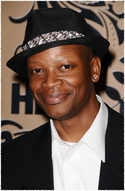

Лоуренс Гиллиард
 Боб (актёр Лоуренс Гиллиард) - новичок в тюрьме, перед этим месяцы, один скитался по дорогам, когда все в его бывшем лагере были убиты. Он бывший армейский медик восстанавливающийся после алкоголизма, Боб пытается контролировать своих внутренних демонов.
Лоуренс Гиллиард младший появился во многих фильмах. в том числе: Бандах Нью-Йорка Мартина Скорсезе, Машинисте с Кристианом Бэйлом и Маменькином сыночке с Адамом Сэндлером.
Гиллиард снимался на постоянной роли в признанном критиками сериале Прослушка на канале HBO, а также играл роль в сериале канала A & E Зверь с Патриком Суэйзи. Некоторые из его ролей в качестве приглашённой звезды включают: CSI: Нью-Йорк, Закон и порядок, Числа, В лучах славы, Саутленд, Армейские жёны и Лонгмайр.
Гиллиард выпускник престижной Джульярдской школы в Нью-Йорке. Он также учился в актёрской студии Стеллы Адлер, Американской академии драматического искусства, Актёрской студии и Балтиморской школе искусств.
Наиболее известен по фильмам:
Банды Нью-Йорка
Прослушка
Машинист
Саутленд
Компаньон